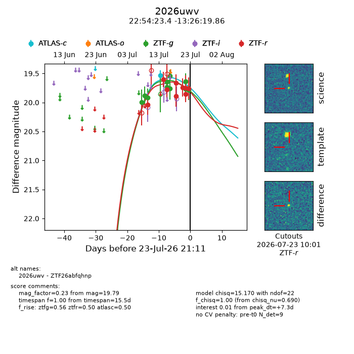
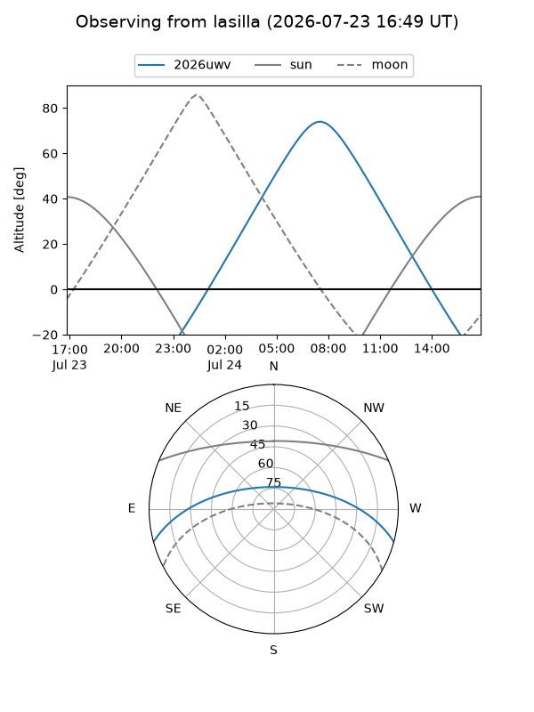
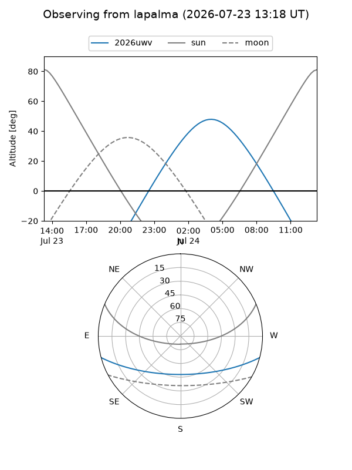
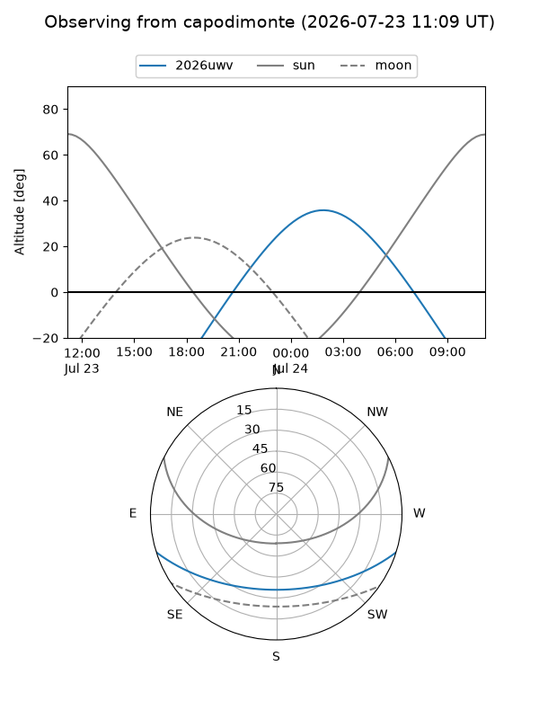
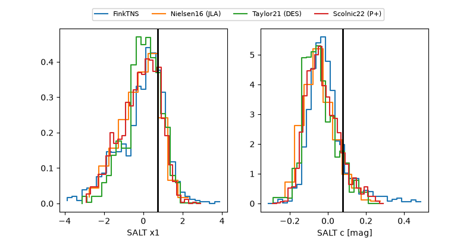

2026uwv
Target 2026uwv at 2026-07-23 21:14
Aliases and brokers:
FINK-ZTF: ztf.fink-portal.org/ZTF26abfqhnp
Lasair-ZTF: lasair-ztf.lsst.ac.uk/objects/ZTF26abfqhnp
ALeRCE-ZTF: alerce.online/object/ZTF26abfqhnp
YSE-PZ: ziggy.ucolick.org/yse/transient_detail/2026uwv
TNS name: wis-tns.org/object/2026uwv
Direct TNS query: direct search
alt names
ZTF26abfqhnp (ztf,fink_ztf)
2026uwv (tns,yse)
Coordinates:
equatorial (ra, dec) = 343.5973,-13.43885
equatorial (HMS+DMS) = 22:54:23.35,-13:26:19.86
galactic (l, b) = (53.6759,-59.44406)
Flags:
TNS type: nan
peak dt: +7.3
Photometry:
last atlasc=19.53, ztfg=19.79, ztfr=19.76
1 atlasc, 10 ztfg, 9 ztfr detections
Lightcurve

Visibility



Additional plots
